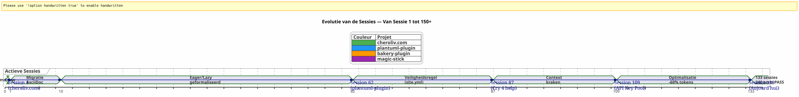
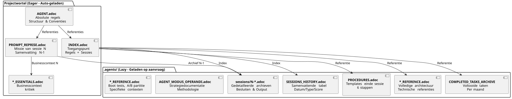

Een AI-Agent aansturen met AsciiDoc: Mijn Eager/Lazy-strategie voor Opencode-sessies zonder contextlekken
Gepubliceerd op 24 April 2026
Samenvatting
Als je werkt met een AI-agent zoals Opencode aan complexe projecten over meerdere sessies, kom je een fundamenteel probleem tegen:de contextlek. De agent herinnert zich de vorige sessie niet. Alles wat hem/haar is uitgelegd — de architectuur, de conventies, de staat van de backlog — is verloren. Het reconstrueren van deze context bij elke sessie is kostbaar, traag en een bron van fouten.
Dit artikel beschrijft de ambachtelijke strategie die ik heb opgebouwd om dit probleem op te lossen: een persistent bestuursysteem gebaseerd op AsciiDoc-bestanden, met een dichotomieGreedig/Luiom de consumptie van de contexttoken te optimaliseren, en eenonmisbare procedure voor het einde van de sessieom de continuiteit te waarborgen.
De scène: maandag 21 april, 9:00
Ik heropen Opencode om mijn Gradle-plugin voort te zetten.plantuml-plugin. Gisteravond heb ik drie uur doorgebracht met praten met de architectuuragent van de API-sleutelpool — round-robin rotatie, quota-beheer, automatische fallback. Deze ochtend kijkt de agent mij aan met ogen van een goudvis.
_ — Hallo, ik ben uw Opencode-assistent. Hoe kan ik u vandaag helpen? _
Geen — Ah ja, de API-sleutelpool, we waren bij de YAML-structuur. Geen — Let op,PlantumlManager`is een Kotlin singleton-object, geen klasse. Nee — Nee, we hebben gisteren besloten dat`SyntaxValidationResult`bleef een afgesloten geneste klasse in`PlantumlService.
Alles moet opnieuw gedaan worden. Of liever: alles moet opnieuw uitgelegd worden. Ik zal de eerste twintig minuten van mijn sessie besteden aan het reconstrueren van een context die de agent gisteren al in handen had. Twintig minuten verbrande tokens. Twintig minuten waarin ik zou kunnen coderen, maar waar ik verplicht pedagogisch werk doe.
Dit is geen bug van Opencode. Het is de eigenlijke aard van conversationele LLMs : tussen twee sessies is het werkgeheugenvolledig verwijderd. De agent herinnert zich de vorige missie niet, de genomen besluiten, de geïdentificeerde valstrikken, de code die we samen hebben geschreven.
Ik heb dit tientallen keren meegemaakt. Op vier gelijktijdige projecten. Met sessies die elkaar opvolgen gedurende weken. Ik heb berekend : gemiddeld,30 tot 40 % van de sessietijdHet was gewijd aan het hercontextualiseren van de agent. Tijdens sessie 87 van het project`plantuml-plugin`, ik ben door de lint gesprongen. Ik kon het me niet meer veroorloven om voor de tiende keer uit te leggen dat`AttemptEntry`is een data class top-level in`DiagramProcessor.kt`.
Ik had een systeem nodig. Geen hack. Echte gouvernance.
Genesis: Van Chaos naar Methode
De eerste sessies: het donkere tijdperk
Mijn eerste project met Opencode,plantuml-plugin, is gestart zonder enige governance. Ik stel een vraag, de agent reageert, we itereren, de sessie eindigt, en de volgende dag beginnen we opnieuw bij nul. Dat was sessie 1, dan sessie 2, dan sessie 3… tot en met sessie 62 waarbij ik me realiseer dat ik cumulatief uren verloren heb aan het opnieuw uitleggen van dezelfde architectuur.
Bij sessie 62 zijn de cijfers er:198 eenheidstests slagen, 42 gevalideerde functionele tests, het plugin werkt. Maar de cognitieve kosten zijn ondraaglijk. Elke nieuwe sessie begint met een monoloog van twintig minuten over de structuur van het project.
De aflevering van site.yml Vernietigd (Sessie 2, bakery-plugin)
De methode ontstaat ook uit een catastrofe. Op het project`bakery-gradle`, op sessie 2, vraag ik aan de agent om het bestand te wijzigen`site.yml`. De agent, zonder te controleren of het bestand versie heeft, doet een`Write`complet die de inhoud overschrijft. Resultaat: de echte tokens (Firebase API-sleutels, deploy-secrets) worden vervangen door nep-placeholders. Het bestand stond niet in git — het stond in`.gitignore`om de geheimen te beschermen.
Zonder back-up. Zonder`git restore`mogelijk. Ik zit vast. Ik moet handmatig het configuratiebestand opbouwen, de tokens in mijn wachtwoordbeheerders vinden, alles weer samenvoegen.
Van deze frustratie ontstaat deAbsolute regel 1b :
_ NOOIT verplettereneen configuratiebestand met een`Write`volledig wanneer een`Edit`Gedeeltelijk volstaat.NOOIT vervangenvervang gevoelige waarden door fictieve waarden.Controleer git check-ignore en `git ls-filesvoordat er enige wijziging wordt aangebracht. _
Deze regel, vandaag gebeiteld in het marmer van al mijn bestanden`AGENT.adoc` et `INDEX.adoc`op vier projecten, is het ontstaan uit een echte fout die mij een uur handwerk kostte.
De migratie Markdown → AsciiDoc (Sessie 1, cheroliv.com)
Op 25 april 2026, op`cheroliv.com`, ik neem een radicaal besluit: de volledige gouvernance van Markdown naar AsciiDoc converteren. Dit is niet esthetisch. Het is functioneel. AsciiDoc biedt een semantische structuur die LLMs beter lezen: hiërarchische secties, getypeerde tabellen, admonities (NOTE, WARNING, CAUTION), machineleesbare documentattributen
Sessie 1 van`cheroliv.com`formaliseert de structuur:
-
Conversie van`AGENTS.md` en
AGENT.adoc -
Aanmaken van de gespecialiseerde agents :`CODER.adoc`,
SCRUM_MASTER.adoc,PLANTUML_DESIGNER.adoc -
Creatie van de Eager/Lazy structuur:`INDEX.adoc`,
SESSIONS_HISTORY.adoc,AGENT_SESSION_MANAGER.adoc,SESSION_CHECKLIST.adoc,PROCEDURES.adoc
Een enkele commit :`90975e9 refactor: migrate agent governance from Markdown to AsciiDoc`. En de site blijft functioneren.

De tijdlijn hierboven illustreert de werkelijke voortgang. Het kantelpunt is sessie 87: dat is waar de frustratie van herhaaldelijke recontextualisatie de tolerantiedrempel overschrijdt, en de Eager/Lazy-methode ophoudt een idee te zijn om een verplichting te worden.
De Strategie : Eager/Lazy in detail
Filosofie : Computer-cache toegepast op cognitie
Mijn aanpak haalt zijn inspiratie rechtstreeks uit de cachebeheer in de informatica. Alles watkritisch en vaak gebruiktmoet onmiddellijk toegankelijk zijn (ijverig). Alles wat iscontextueel of volumineusdoit op aanvraag worden geladen (luie).
Eager (Dashboard) |
Lazy (Eigenaarshandleiding) |
Grootte |
< 100 regels, < 10k tokens |
Onbeperkt, gedetailleerd |
Laden |
Auto, aan het begin van de sessie |
Op verzoek van de agent |
Inhoud |
Absolute regels, lopende missie, kritieke toestand |
Archieven van sessies, volledig historisch, gedetailleerde procedures, technische referenties |
Rol |
Oriënteer onmiddellijk de agent |
Antwoorden op de vragen over diepe context |
De Eager-bestanden: Het Dashboard
Deze bestanden bevinden zich in de wortel van elk project en worden automatisch geladen door de agent aan het begin van elke sessie. Ze vormen dedashboard-- kritieke informatie, direct beschikbaar.

AGENT.adoc-- Het hoofdbestand. Op`cheroliv.com`, het bestaat uit 200 regels en bevat :
-
De absolute regels van het project (geen commit zonder toestemming, geen`rm`zonder bevestiging)
-
De structuur van het project en de codeconventies
-
Essentiële opdrachten (
./gradlew serve,./gradlew test) -
Epics en product backlog (prioriteerde gebruikersverhalen)
-
De transversale kwaliteitscriteria (toegankelijkheid, responsief, compatibiliteit)
op`bakery-plugin`, de regel 0 is anders:./gradlew -q publishToMavenLocal` verplicht na elke wijziging van de broncode. Omdat het testen van de plug-in zonder de lokale JAR opnieuw te publiceren mij een uur kostte om een fout te zoeken in code die nog niet verpakt was.
PROMPT_REPRISE.adoc-- De missie van de huidige sessie. Wordt bijgewerkt aan het einde van elke sessie, het bevat :
-
Het sessienummer en de prioritaire missie
-
De samenvatting van de vorige sessie (wat is gedaan, wat nog moet gebeuren)
-
Acceptatiecriteria van de huidige sessie
-
Specifieke technische herinneringen
.agents/INDEX.adoc-- Het toegangspunt. Het samenvat de absolute regels, de recente sessies en vooral deprojectenportefeuilleBeheerd met dezelfde methodologie. Tot op heden staan er vijf projecten vermeld:
----
----
----
| magic-stick | Session 23 | SCRIPT_VERIFICATION.adoc | 2026-04-27 |
| bakery-gradle | Session 11 | TEST_COVERAGE_ANALYSIS | 2026-04-27 |
| cheroliv.com | Session 9 | TEST_COVERAGE_ANALYSIS | 2026-04-27 |
| plantuml-gradle| Session 133| TEST_COVERAGE_ANALYSIS | 2026-04-23 |
| jhipster-gradle-plugins | Session 1 | TEST_COVERAGE_ANALYSIS | 2026-04-28 |
----
**`*_ESSENTIALS.adoc`** -- Een recente toevoeging (Sessie 109, plantuml-plugin) om het Eager-context nog verder te optimaliseren. In plaats van 200 regels bedrijfscontext te laden op de API-sleutelpool, laad ik 50 regels van het essentiële, en blijven de resterende 150 regels LAZY in`*_REFERENCE.adoc`.
Gemeten resultaat : overgang van**~25k tokens EAGER naar ~10k tokens**(besparing van 60%). De agent heeft geen energie-intensieve herinneringen meer nodig.
==== De ontbrekende schakel : `opencode.json
Ik moet je iets bekennen dat ik bijna vergeten was te documenteren. Boven al deze .adoc-bestanden zit een minuscuul JSON-bestand zonder hetwelke niets werkt. Het heet`opencode.json`en het is zes regels. Letterlijk zes regels.
[source,json]
----
{
"$schema": "https://opencode.ai/config.json",
"instructions": [
"AGENT.adoc"
]
}
----
Dit is het bestand dat tegen Opencode zegt: « Bij opstarten, laden`AGENT.adoc`automatisch. » Zonder hem is de agent een blanco pagina, precies zoals ik het aan het begin van het artikel beschreef. Met hem heeft de agent al de absolute regels, de projectarchitectuur en de essentiële commando's in handen — zelfs voordat ik hallo zeg.
Ik ontdekte toevallig het belang van dit bestand. Op`bakery-plugin`, bestond niet. Ik vroeg me af waarom de agent systematisch meer « verdwaald » was bij dit project dan bij de anderen. De absolute regels waren goed in`AGENT.adoc`— maar`AGENT.adoc`Het was nooit opgeladen. De agent las alleen wat ik hem zei te lezen, handmatig, elke sessie. Het was sessie 11 van`bakery-plugin`toen ik besefte de afwezigheid van de`opencode.json`. Ik heb het gemaakt — en sessie 12 begon zoals de anderen.
Dit bestand is nu zo vanzelfsprekend voor mij dat ik er niet eens meer aan dacht. Een klassieke fout van een ontwikkelaar die zijn gereedschap te goed kent. Vandaag maak ik het systematisch *vooraf*.`AGENT.adoc`. Dit is de eerste steen.
==== De dualiteit van `INDEX.adoc
Een andere subtiliteit die expliciet gemaakt moet worden:`INDEX.adoc`woont in`.agents/`— een dossier dat ik heb gepresenteerd als LAZY. Toch zet ik het in al mijn tabellen als EAGER. Er lijkt hier een duidelijke spanning te zijn.
De realiteit op het terrein: de bestanden`.agents/INDEX.adoc`worden automatisch geladen aan het begin van de sessie, net als`AGENT.adoc` et `PROMPT_REPRISE.adoc`. Ze zijn in`.agents/`voor organisatorische redenen — niet de wortel binnenvallen — maar hun gedrag is EAGER.
Op`plantuml-plugin`, `INDEX.adoc`telt 200 regels en bevat de absolute regels *compleet* met hun geschiedenis (de lessen van eerdere sessies), de EPICs met scores, en het projectportfolio. Dit is het document dat de agent raadpleegt om te weten « waar we staan ». Op`bakery-plugin`, hij maakt 150 regels met de roadmap en de recente sessies.
Opzettelijke redundantie tussen`AGENT.adoc` et `INDEX.adoc`Kan verrassen. De absolute regels zijn aanwezig in beide. Waarom? Omdat ze twee verschillende rollen vervullen: in`AGENT.adoc`, ze zijn *explicatief* (de storytelling van de regel, de geleerde les); in`INDEX.adoc`, ze zijn *uitvoerend* (de naakte regel, zonder rechtvaardiging, voor een snelle raadpleging). De agent leest`AGENT.adoc`eenmaal voor *begrijpen* ; hij herleest`INDEX.adoc`voor elke sessie om *toepassen*. Twee gebruiken, twee formaten.
[plantuml, format=svg, id=diag-dualite-agent-index, alt="Comparaison entre AGENT.adoc (narratif) et INDEX.adoc (exécutif)"]
----
@startuml
skinparam backgroundColor #FEFEFE
skinparam defaultTextAlignment center
title Dualiteit AGENT.adoc ←→ INDEX.adoc
left to right direction
rectangle "AGENT.adoc\n(wortel — EAGER)" as AGENT #E3F2FD {
rectangle "📖 **Narratief formaat**\nDe storytelling van de regel\nde geleerde les, de context" as NARR
rectangle "🏗️ **Volledige architectuur**\nStructuur project, componenten\nGedetailleerde backlog US" as ARCHI
rectangle "📋 **Uitlegregels**\nWaarom bestaat de regel\nHistoriek van het incident" as EXPL
}
rectangle "INDEX.adoc\n(.agents/ — EAGER)" as INDEX #E8F5E9 {
rectangle "⚡ **Uitvoerend formaat**\nDe naakte regel, zonder rechtvaardiging\nSnelle consultatie" as EXEC
rectangle "📊 **Roadmap & EPICs**\nSamenvattende tabel\nVoortgang, Score, Prioriteit" as ROAD
rectangle "🌐 **Projectenportefeuille**\nDoorsnedend weergave\n5 gesynchroniseerde projecten" as PORT
}
AGENT --> INDEX : "Agent leest AGENT.adoc\n1 keer voor **te begrijpen**"
INDEX --> AGENT : "Agent herleest INDEX.adoc\nelke sessie om toe te passen"
note bottom of AGENT
Taille max : 200 lignes
end note
note bottom of INDEX
Taille max : 200 lignes
Source de vérité en cas de divergence
end note
@enduml
----
Deze bewuste redundantie is een ontwerpkeuze. Ze verbruikt ~50 extra regels EAGER-tokens — maar ze garandeert dat de agent altijd de regels voor ogen heeft, ook in het compacte formaat dat onmiddellijke gehoorzaamheid vergemakkelijkt.
=== De LAZY-bestanden: de eigenaarshandleiding
Deze bestanden leven in`.agents/`en worden alleen gelezen wanneer de agent ze nodig heeft. Ze vormen de ware rijkdom van de methode, omdat ze de kennis van het project opbouwen zonder de huidige context te vervuilen.
[plantuml, format=svg, id=diag-agents-tree, alt="Arborescence complète du dossier .agents/"]
----
@startuml
skinparam folderBackgroundColor #E3F2FD
skinparam folderBorderColor #1565C0
skinparam fileBackgroundColor #FFF3E0
skinparam fileBorderColor #EF6C00
folder ".agents/" as ROOT {
file "INDEX.adoc\n(EAGER -- 200 regels)" as IDX #E8F5E9
file "AGENT_SESSION_MANAGER.adoc\n(sjabloonsessie)" as ASM
file "SESSION_CHECKLIST.adoc\n(Wanneer te wijzigen)" as CHK
file "PROCEDURES.adoc\n(6 stappen + LAZY/EAGER)" as PRO
file "SESSIONS_HISTORY.adoc\n(Alle sessies)" as HIS
folder "sessies/" as SESS {
file "1-chore-migration.adoc" as S1
file "109-formalisation-lazy.adoc" as S109 #FFECB3
file "133-epic11-article.adoc" as S133
file "... +130 andere" as SMORE
}
folder "archieven/" as ARCH {
file "COMPLETED_TASKS_2026-04.adoc" as CTA
file "SESSIONS_HISTORY_83-95.adoc" as SHIST
folder "sessies_samenvattingen/" as SUM {
file "SESSION_64_SUMMARY.adoc" as SU64
file "SESSION_73_SUMMARY.adoc" as SU73
file "..." as SUMORE
}
folder "prompts_archive/" as PARCH {
file "PROMPT_REPRISE_S65.adoc" as PR65
file "PROMPT_REPRISE_S75.adoc" as PR75
file "..." as PMORE
}
}
}
IDX --> SESS : "indexeert"
IDX --> HIS : "indexeert"
IDX --> ARCH : "Referentie"
note right of S109
Session 109 =
Formalisation stratégie
LAZY/EAGER
Token : ~25k → ~10k
end note
@enduml
----
De boomstructuur hierboven toont de werkelijke structuur van de map`.agents/`op`plantuml-plugin`, het meest volwassen project. Let op de diepte in drie lagen: rootbestanden (metadata), map`sessions/`(chronologische archieven), en dossier`archives/`(aggregaties en samenvattingen). Dit is deze diepte die het bestuur transformeert van een eenvoudig TODO-bestand naar een**volledig organisatiegeheugen**.
**.agents/sessions/{N}-{titre}.adoc**-- De gedetailleerde archieven van elke sessie. Momenteel:
* `plantuml-plugin`:**133 gearchiveerde sessies**(van sessie 1 tot 133)
* `bakery-plugin`:**11 sessies**
* `magic-stick` : **23 sessies**
* `cheroliv.com`:**9 formele sessies**+ 7 pre-systeem sessies retroactief gereconstrueerd
Elk archief bevat de volledige context van de sessie, de genomen beslissingen, de ondervonden problemen en hun oplossing, de uitgevoerde opdrachten en hun output.
**.agents/SESSIONS_HISTORY.adoc**-- Een samenvattende tabel van alle sessies met een score. Voorbeeld op`cheroliv.com`:
----
| -6 | 2025-05 | chore | Initialisation projet Gradle/JBake | 7/10 | 1 | 2026-04-25 | chore | Migration gouvernance agent | 8/10 | 7 | 2026-04-27 | debug/fix | Correction publishSite | 9/10 | 8 | 2026-04-27 | analyse | Analyse article 0108 | 7/10
**.agents/COMPLETED_TASKS_ARCHIVE_{maand}.adoc**-- Afgeronde taken worden per maand gearchiveerd, zodat het actieve backlog niet overbelast wordt. Wanneer een user story is voltooid, wordt hij hierheen verplaatst. Het backlog blijft leesbaar: maximum 10 actieve items.
**.agents/PROCEDURES.adoc**Gedetailleerde sjablonen van de afsluitprocedure van de sessie. Lang, maar één keer gelezen door de agent wanneer hij de methode leert. Daarna wordt de procedure mechanisch.
**.agents/AGENT_MODUS_OPERANDI.adoc**-- De volledige strategische documentatie. Op`plantuml-plugin`, dit bestand doet**900+ regels**en heet eigenlijk`AGENT_METHODOLOGIES.adoc`— Ik heb de naam gewijzigd tussen het schrijven van dit artikel en de feitelijke implementatie. Dit type naamdivergentie is onvermijdelijk in een ambachtelijk systeem dat evolueert. Het belangrijkste is de naamgevingsconventie: als het bestand de *methode* documenteert, begint het met`AGENT_`of een expliciete prefix. Het documenteert de Eager/Lazy-methodologie, de patronen die gevolgd moeten worden, de anti-patronen die vermeden moeten worden. Het is LAZY omdat een agent de hele strategie niet elke sessie opnieuw hoeft door te lezen, alleen wanneer er ambiguïteit is.
**`*_REFERENCE.adoc`** -- De technische referenties specifiek voor het project. Op`magic-stick`, twee dichte LAZY-bestanden :
* `AB_PARTITION_REFERENCE.adoc`(147 regels) -- Architectuur partitie A/B GPT, scripts`update-system.sh`, geschatte groottes, rollbackmechanisme
* `BOOT_TEST_REFERENCE.adoc`(144 regels) -- Procedure QEMU + VNC voor het testen van de opstart van de ISO zonder fysieke hardware, checklist BIOS/UEFI, beperkingen CI/CD
op`plantuml-plugin` :
* `ARCHITECTURE.adoc`(134 regels) -- Structuur van de 11 data-klassen, aandachtspunten (valkuilen om te vermijden), geoptimaliseerde testopdrachten
* `API_KEY_POOL_REFERENCE.adoc`-- Volledige details van de sleutelpool (LAZY terwijl`ESSENTIALS`is EAGER)
== Gespecialiseerde Agenten: Een Virtueel Team
De governance beperkt zich niet tot passieve bestanden. Ik heb geformaliseerd**rollen van gespecialiseerde agenten**in speciale LAZY-bestanden, die de verwachte workflow definiëren op basis van het taaktype.
|===
|Agent |Bestand |Rol |project |**coderen** |`CODER.adoc` |Implementatie FTL/CSS/JS, semantische tags, toegankelijkheidscriteria |cheroliv.com |**SCRUM Master** |`SCRUM_MASTER.adoc` |Planning US, opdeling in subtaken, detectie van afhankelijkheden |cheroliv.com |**PlantUML Ontwerper** |`PLANTUML_DESIGNER.adoc` |Diagrammen maken, PUML-syntaxis, JBake-integratie |cheroliv.com
|===
Het bestand`CODER.adoc`op`cheroliv.com`bevat concrete regels : _Enkel één`<h1>`per pagina_, _voorvoegen de paden met`${content.rootpath}`_, _Taal aangeven`<html lang="${content.lang!"fr"}">`_. Deze conventies, één keer geschreven, worden automatisch nageleefd door de agent sinds sessie 1.
Het bestand`SCRUM_MASTER.adoc`legt een structuur op voor een leverbaar :**doel**, **taken**(coördinaten met toewijzing),**Acceptatiecriteria**, **Risico's**. Als ik een actieplan vraag, produceert de agent deze structuur zonder dat ik dat heb gevraagd. De governance**programma**de agent.
==== Wanneer de gespecialiseerde agents onmisbaar worden
De creatie van gespecialiseerde agents volgt een natuurlijke curve. Aan het begin van een project heb je ze niet nodig —`AGENT.adoc`Dat is ruim voldoende. Maar als het project groeit (zeg maar, meer dan 20 sessies), moeten twee signalen je waarschuwen :
1. De agent mengt de conventies van twee verschillende domeinen (bijv. PlantUML-syntaxis en CSS-regels)
2. Je brengt meer tijd door met het corrigeren van de agent over conventies die je hem/haar al vijf keer hebt uitgelegd
op`cheroliv.com`, het is gebeurd tijdens de sessie... 1. Ja, vanaf het begin. Omdat dit project een website is met drie talen (FTL, CSS, JS), AsciiDoc-inhoud en PlantUML-diagrammen — drie gebieden die niets met elkaar te maken hebben. De agent CODER moet de lettergroottes en media queries kennen ; de agent PLANTUML_DESIGNER moet de syntaxis kennen`@startuml`. Zonder scheiding bood de CODER-agent mij diagrammen aan, en omgekeerd. De chaos.
Op`jhipster-gradle-plugins`, ik heb twee gespecialiseerde agents aangemaakt die zijn afgestemd op de ontwikkeling van Gradle-plugins:`PLUGIN_DEVELOPER.adoc` et `BACKLOG_MANAGER.adoc`. De eerste codeert alle Kotlin/Gradle-conventies (geen`!!`, data classes voor de modellen,`@TaskAction`voor de taken). De tweede weet dat`persistence`moet stabiel zijn voordat`assistant`start zijn ontwikkeling niet — een kritieke afhankelijkheid in een mono-repo.
De fout die je niet moet maken: te veel agents te vroeg maken`plantuml-plugin`had de sessie 108 afgewacht voordat een gespecialiseerde agent voor de API-sleutelpool werd geformaliseerd. Daarvoor paste de zakelijke context in`AGENT.adoc`. De vuistregel : een gespecialiseerde agent is gerechtvaardigd wanneer zijn vakgebied meer dan 100 regels documentatie beslaat.
==== De naamgevingsconventie van de sessies
Een detail dat futiel lijkt maar kritiek wordt wanneer je 100 sessies bereikt. Hoe noem je de archiefbestanden?
Ik heb op de harde manier geleerd dat een conventie nodig is — vier projecten, vier verschillende formaten in het begin, en ik verloor het overzicht. Vandaag, de conventie die ik gestabiliseerd heb is :
----
{N}-{type}-{sujet-kebab-case}.adoc
Voorbeelden concrete:
* `1-chore-migration-gouvernance-agent.adoc`— sessie 1, type taak
* `10-solidification-tests.adoc`— session 10, zonder expliciet type (het onderwerp volstaat)
* `036-debug-graphify-symlink-epic9.adoc`— sessie 36 met nummer van 3 cijfers voor sorteren
Het sessienummer is het belangrijkste sorteercriterium. Projecten die driecijferige nummers gebruiken (001, 036, 133) voorkomen problemen met lexicografisch sorteren wanneer de nummerwaarde boven 99 komt. Dit is wat ik nu gebruik op`magic-stick`:`001-init-projet.adoc`, `036-debug-graphify-symlink-epic9.adoc`.
Het type is optioneel en afgeleid van de session-trefwoorden (debug, feature, refactor, docs, chore, test). Het onderwerp in kebab-case is het belangrijkste onderdeel: het moet mogelijk maken een sessie te vinden zonder het bestand te openen. Als je je afvraagt « welke sessie was het waar we de timeout van de integratietests hebben verholpen? », dan is het antwoord`124-fix-timeout-integration-test.adoc`.
Voor de gereconstrueerde historische sessies (projecten die zijn ontstaan vóór de gouvernance), gebruik ik negatieve nummers. Op`cheroliv.com`, de sessies -6 tot 0 omvatten de hele pre-bestuurgeschiedenis van het project. En voor de sessies « niet gedocumenteerd » of verloren, maak ik een invoer aan in`SESSIONS_HISTORY.adoc`zonder overeenkomend archief, met een score`?`. Het is eerlijker dan doen alsof.
[plantuml, format=svg, id=diag-naming-convention, alt="Arbre de décision pour le nommage des fichiers de session"]
----
@startuml
skinparam backgroundColor #FEFEFE
skinparam defaultTextAlignment center
skinparam wrapWidth 200
title Naamgevingsconventie voor sessies
start
:Une session se termine;
note right: Trigger "einde van de sessie"
if (Session antérieure\nà la gouvernance ?) then (oui)
:Numéro **NÉGATIF**\n-6, -5 ... 0;
note right: Historique\nreconstitué
:Suffixe : reconstitution;
else (non)
:Numéro **POSITIF**\nsur 3 chiffres si > 99;
note right: 001, 036, 133\npour le tri lexicographique
:Détecter le **TYPE**;
if (Mots-clés trouvés ?) then (oui)
:debug / feature / refactor\ndocs / chore / test;
else (non)
:Omettre le type\n(le sujet suffit);
endif
:Formuler le **SUJET** en kebab-case;
note right
Ex: fix-timeout-integration-test
Doit permettre de retrouver
sans ouvrir le fichier
end note
endif
:Nom final : {N}-{type}-{sujet}.adoc;
note right
• 1-chore-migration-gouvernance.adoc
• 036-debug-graphify-symlink.adoc
• 124-fix-timeout-integration-test.adoc
• 133-epic11-article-blog-kg.adoc
end note
if (Session documentée ?) then (oui)
:Créer archive dans sessions/;
:Ajouter ligne SESSIONS_HISTORY\navec score X/10;
else (non)
:Ajouter ligne SESSIONS_HISTORY\navec score **?**\n**sans archive**;
note right: L'honnêteté\nplutôt que le vide
endif
stop
@enduml
----
==== TEST_COVERAGE_ANALYSIS.adoc` — Stap 5 Uitgelegd
Stap 5 van de procedure voor het beëindigen van de sessie is het meest mysterieuze. Het zegt « Bijwerken`TEST_COVERAGE_ANALYSIS.adoc`als tests zijn toegevoegd of gewijzigd. » Maar wat lijkt dit bestand ?
Op`plantuml-plugin`, het is geëvolueerd van een paar regels naar een volledige structuur. Dit is zijn gestabiliseerde vorm:
[source]
----
= Analyse de Couverture de Tests
== Suivi des Tests
|===
| Classe de test | Type | Tests | Statut | Dernière MAJ
| PlantumlServiceTest | unit | 45/45 | ✅ PASS | 2026-04-23
| ApiKeyPoolTest | integration | 15/15 | ✅ PASS | 2026-04-20
|===
== Historique par Session
| Session | Tests ajoutés | Tests modifiés | Couverture
| 133 | 0 | 2 | 100%
| 132 | 5 | 0 | 100%
|===
----
Het belang is niet het bestand zelf — het is de verplichting om *noteren* wat veranderd is. Zonder deze stap, na 50 sessies, weet je niet meer welke tests wat dekken. De agent ook niet. Het bestand wordt de enige bron van waarheid over de testdekking van het project.
Voor projecten zonder traditionele tests (zoals`magic-stick`die bash-scripts test), stap 5 wordt vervangen door`SCRIPT_VERIFICATION.adoc`. Het mechanisme is hetzelfde: een bestand dat de validatiestatus van scripts bijhoudt. Pas stap 5 aan op uw project, maar sla deze nooit over. Het is het vangnet dat stille regressie voorkomt.
[plantuml, format=svg, id=diag-dualite-agent-index, alt="Comparaison entre AGENT.adoc (narratif) et INDEX.adoc (exécutif)"]
----
@startuml
skinparam backgroundColor #FEFEFE
skinparam defaultTextAlignment center
title Dualiteit AGENT.adoc ←→ INDEX.adoc
left to right direction
rectangle "AGENT.adoc\n(Root — EAGER)" as AGENT #E3F2FD {
rectangle "📖 **Narratief Formaat**\nDe storytelling van de regel\nde geleerde les, de context" as NARR
rectangle "🏗️ **Volledige Architectuur**\nProjectstructuur, componenten\nGedetailleerde US-backlog" as ARCHI
rectangle "📋 **Toelichtende Regels**\nWaarom de regel bestaat\nIncidentgeschiedenis" as EXPL
}
rectangle "INDEX.adoc\n(.agents/ — EAGER)" as INDEX #E8F5E9 {
rectangle "⚡ **Executief Formaat**\nDe kale regel, zonder rechtvaardiging\nSnelle raadpleging" as EXEC
rectangle "📊 **Roadmap & EPICs**\nSamenvattende tabel\nVoortgang, Score, Prioriteit" as ROAD
rectangle "🌐 **Projectportfolio**\nTransversaal overzicht\n5 gesynchroniseerde projecten" as PORT
}
AGENT --> INDEX : "Agent leest AGENT.adoc\n1 keer om te **begrijpen**"
INDEX --> AGENT : "Agent herleest INDEX.adoc\nelke sessie om toe te **passen**"
note bottom of AGENT
Max grootte: 200 regels
end note
note bottom of INDEX
Max grootte: 200 regels
Source de vérité en cas de divergence
end note
@enduml
----
[plantuml, format=svg, id=diag-session-flow, alt="Flux d'une session type avec Eager/Lazy et agents"]
----
@startuml
skinparam backgroundColor #FEFEFE
start
:Début session;
note right: L'agent est une page blanche
:Chargement EAGER auto;
note right
* AGENT.adoc (règles absolues)
* PROMPT_REPRISE.adoc (mission N)
* INDEX.adoc (état projet)
end note
if (Mission claire ?) then (oui)
:Exécution directe;
else (non)
:Charge LAZY sur demande;
note right
* SESSIONS_HISTORY.adoc (contexte passé)
* sessions/{N-1}-*.adoc (décisions)
* *_REFERENCE.adoc (architechture)
end note
endif
:Délégation agent spécialisé ?;
if (CODER ?) then (oui)
:Lit CODER.adoc;
:Suit conventions FTL/CSS;
elseif (SCRUM Master ?) then (oui)
:Lit SCRUM_MASTER.adoc;
:Structure livrable imposée;
elseif (PlantUML ?) then (oui)
:Lit PLANTUML_DESIGNER.adoc;
:Syntaxe PUML + intégration;
else (non)
endif
:Travail de la session;
:Fin de session (trigger utilisateur);
:Procédure 6 étapes;
note right
1. Archive sessions/N-*.adoc
2. Maj PROMPT_REPRISE.adoc (N+1)
3. Maj SESSIONS_HISTORY.adoc
4. Maj INDEX.adoc
5. Maj TEST_COVERAGE (si applicable)
6. Maj COMPLETED_TASKS_ARCHIVE.adoc
end note
:Checklist [✅] x 6;
stop
@enduml
----
Het diagram hierboven toont de volledige levenscyclus van een sessie. Het sleutelpunt is de split na het EAGER‑laden: of de missie duidelijk genoeg is om direct uit te voeren (80% van de gevallen), of de agent LAZY laadt om een onduidelijkheid op te lossen (20% van de gevallen). Het is dit onderscheid dat tokens bespaart.
== De procedure voor het einde van de sessie : De gouden regel
[plantuml, format=svg, id=diag-agents-tree, alt="Arborescence complète du dossier .agents/"]
----
@startuml
skinparam folderBackgroundColor #E3F2FD
skinparam folderBorderColor #1565C0
skinparam fileBackgroundColor #FFF3E0
skinparam fileBorderColor #EF6C00
folder ".agents/" as ROOT {
file "INDEX.adoc\n(EAGER -- 200 regels)" as IDX #E8F5E9
file "AGENT_SESSION_MANAGER.adoc\n(Sessietemplate)" as ASM
file "SESSION_CHECKLIST.adoc\n(Wanneer wijzigen)" as CHK
file "PROCEDURES.adoc\n(6 stappen + LAZY/EAGER)" as PRO
file "SESSIONS_HISTORY.adoc\n(Alle sessies)" as HIS
folder "sessions/" as SESS {
file "1-chore-migration.adoc" as S1
file "109-formalisation-lazy.adoc" as S109 #FFECB3
file "133-epic11-article.adoc" as S133
file "... +130 anderen" as SMORE
}
folder "archives/" as ARCH {
file "COMPLETED_TASKS_2026-04.adoc" as CTA
file "SESSIONS_HISTORY_83-95.adoc" as SHIST
folder "sessions_summaries/" as SUM {
file "SESSION_64_SUMMARY.adoc" as SU64
file "SESSION_73_SUMMARY.adoc" as SU73
file "..." as SUMORE
}
folder "prompts_archive/" as PARCH {
file "PROMPT_REPRISE_S65.adoc" as PR65
file "PROMPT_REPRISE_S75.adoc" as PR75
file "..." as PMORE
}
}
}
IDX --> SESS : "Index"
IDX --> HIS : "Index"
IDX --> ARCH : "Referentie"
note right of S109
Sessie 109 =
Formalisatie strategie
LAZY/EAGER
Token : ~25k → ~10k
end note
@enduml
----
Zonder deze procedure is de Eager/Lazy-strategie nutteloos. Het is deze procedure die de sessiewerk omzet in persistente informatie. Zij wordt uitgevoerd.**op expliciet verzoek van de gebruiker**(sleutelwoorden: "einde sessie", "ik vertrek", enz.), en het is**verplicht**-- geen uitzondering, geen verzuim.
Het bestand`SESSION_CHECKLIST.adoc`definieert ideale sessiemetrieken :
* Duur : 15-30 minuten
* Gewijzigde bestanden: 1-3 maximum
* LLM-uitwisselingen: 5-10 berichten
* context tokens : < 50k
En tekenen dat je van sessie moet veranderen : _De LLM herhaalt fouten die al gecorrigeerd waren_, _Meer dan 3 bestanden tegelijkertijd gewijzigd_, _Gesprek > 50 berichten_. De gouden regel :**Het is beter om 5 sessies van 20 minuten te hebben dan één sessie van 2 uur met chaos bij het debuggen.**
=== De flux van de 6 stappen (stilzwijgend)
[plantuml, format=svg, id=diag-end-session-flow, alt="Flux de la procédure de fin de session"]
----
@startuml
skinparam defaultTextAlignment center
skinparam wrapWidth 200
skinparam activityBackgroundColor #E3F2FD
start
:L'utilisateur dit "einde van de sessie";
note right: Mots-clés déclencheurs
:Agent détecte le trigger;
:Étape 1\nCréer archive\n`.agents/sessions/N-*.adoc`;
note right: Tout le contexte de la session
:Étape 2\nMettre à jour\n`PROMPT_REPRISE.adoc`;
note right: Mission N + critères d'acceptation N+1
:Étape 3\nMettre à jour\n`SESSIONS_HISTORY.adoc`;
note right: Ligne récap : # / Date / Type / Sujet / Score
:Étape 4\nMettre à jour\n`INDEX.adoc`;
note right: État courant, roadmap, fichiers modifiés
:Étape 5\nMettre à jour\n`TEST_COVERAGE_ANALYSIS.adoc`;
note right: Si tests ajoutés ou modifiés
:Étape 6\nMettre à jour\n`COMPLETED_TASKS_ARCHIVE.adoc`;
note right: Archiver tâches terminées
:Afficher la checklist de confirmation;
note right: Vérifier que chaque [✅] est mérité
stop
@enduml
----
=== De resultaten van 150+ sessies
Dit is wat deze procedure oplevert wanneer ze consequent wordt toegepast op mijn vier projecten:
**plantuml-plugin**:
* **133 sessies**sinds het begin van het project
* **240/240 tests geslaagd**(100% dekking) -- EPICs 1-7 afgerond
* **57 scenario's Cucumber BDD**goedgekeurd
* Veiligheidsregel over de configuratiebestanden gebaseerd op een echte fout (Sessie 2 bakery-plugin)
**bakery-plugin**(empty)
* **11 sessies**in twee weken
* Migratie Supabase → Firebase voltooid (9 tests gecorrigeerd)
* EPIC 6 (publishProfile) functioneel in productie
* Regel 0 aangemaakt:`publishToMavenLocal`verplicht na elke modificatie
**toverstok**:
* **23 sessies**om een live Xubuntu-systeem te maken met A/B-partitie
* Eerste ISO gegenereerd in sessie 10
* Formele opstarttests QEMU + VNC (LAZY-documentatie van 144 regels)
* CI/CD SourceForge werkend
**cheroliv.com**:
* **9 formele sessies**+ reconstitutie van 7 sessies pre-systeem
* Artikel 0101 (OpenCode PATH) gepubliceerd
* Artikel 0108 (dit) herschreven na analyse van zijn tekortkomingen
* Volledige governance gemigreerd van Markdown naar AsciiDoc
=== De definitieve checklist
Na een stille uitvoering van de 6 stappen moet de agent een bevestigingschecklist weergeven:
✅ Procédure de fin de session exécutée 📋 Checklist :
**Absolute regel**: geen stap kan worden gemarkeerd`[✅]`als het bestand niet daadwerkelijk is gewijzigd en gecontroleerd.
== De Gids van Bootstrap: Dag 1, Sessie 0
U bent overtuigd van de methode. U wilt het toepassen op een nieuw project. Waar te beginnen?
Ik heb dit moment beleefd op 28 april 2026. Ik open Opencode op`jhipster-gradle-plugins`, mijn mono-repo van twee JHipster Gradle-plugins. Dit is een project dat al bestaat — de code is er, de Gradle-taken werken. Maar het agent-beheer? Zero. Lege pagina. Zo`plantuml-plugin`Sinds zijn eerste sessie, zijn er maanden verstreken.
Dit is de exacte procedure die ik heb gevolgd en die ik zal volgen voor elk nieuw project. Let goed op de volgorde — die is belangrijk.
[plantuml, format=svg, id=diag-bootstrap, alt="Flux de bootstrap en 6 étapes pour initialiser la gouvernance agent sur un nouveau projet"]
----
@startuml
skinparam backgroundColor #FEFEFE
skinparam defaultTextAlignment center
skinparam wrapWidth 250
skinparam activityBackgroundColor #E8F5E9
title Bootstrap bestuur — Dag 1, Sessie 0
start
:Étape 0\nCréer **opencode.json**\n(6 lignes, instructions: AGENT.adoc);
note right: Le pont qui charge\nAGENT.adoc automatiquement
:Étape 1\nCréer les dossiers\n**mkdir -p .agents/sessions/ .agents/archives/**;
note right: Les conteneurs vides\navant que l'agent écrive dedans
:Étape 2\nCréer **AGENT.adoc**\n(200 lignes, règles absolues);
note right: Le fichier maître\nStructure minimale v1
:Étape 3\nCréer **PROMPT_REPRISE.adoc**\nMission session 1 (max 70 lignes);
note right: Ce que l'agent doit\nfaire à la prochaine session
:Étape 4\nCréer **.agents/INDEX.adoc**\nRègles exécutives + roadmap;
note right: Point d'entrée EAGER\ndans le dossier LAZY
:Étape 5\nCréer les fichiers LAZY structurants\n6 fichiers : SESSIONS_HISTORY, CHECKLIST, etc.;
note right
• SESSIONS_HISTORY.adoc
• SESSION_CHECKLIST.adoc
• PROCEDURES.adoc
• AGENT_SESSION_MANAGER.adoc
• TEST_COVERAGE_ANALYSIS.adoc
• Agents spécialisés (si besoin)
end note
:Étape 6\nAjouter le projet au Portefeuille\nMettre à jour TOUS les INDEX.adoc existants;
note right: Maintenance transverse\nObligatoire mais fastidieuse
:✅ Bootstrap terminé\nSession 1 prête;
note right: 20 minutes investies\nDes centaines économisées
stop
@enduml
----
=== Stap 0 : Maak `opencode.json
Dit is het eerste bestand. Niet`AGENT.adoc`, niet`INDEX.adoc`.`opencode.json`Allereerst, om een eenvoudige reden: als je maakt`AGENT.adoc`Allereerst zul je vergeten om de brug te maken die het automatisch oplaadt. Ik heb het op`bakery-plugin`, Ik weet waar ik het over heb.
=== Stap 1: Mappen aanmaken
[source,bash]
----
mkdir -p .agents/sessions .agents/archives
----
Twee lege mappen.`sessions/`zal de archieven van elke sessie ontvangen.`archives/`ontvangt de maandelijkse COMPLETED_TASKS_ARCHIVE. Deze mappen moeten bestaan *voordat* de agent erin moet schrijven. Een agent die de map en het bestand tegelijk moet aanmaken, is een agent die stil kan falen.
=== Stap 2: maken `AGENT.adoc` — het hoofdbestand
Minimale structuur voor de eerste versie (ze zal groeien) :
[source]
----
= {NOM_PROJET} — Directives Agent
[CAUTION]
----
[plantuml, format=svg, id=diag-naming-convention, alt="Arbre de décision pour le nommage des fichiers de session"]
----
@startuml
skinparam backgroundColor #FEFEFE
skinparam defaultTextAlignment center
skinparam wrapWidth 200
title Naamgevingsconventie voor sessies
start
:Une session se termine;
note right: Trigger "sessie beëindigen"
if (Session antérieure\nà la gouvernance ?) then (oui)
:Numéro **NÉGATIF**\n-6, -5 ... 0;
note right: Geschiedenis\ngereconstrueerd
:Suffixe : reconstitution;
else (non)
:Numéro **POSITIF**\nsur 3 chiffres si > 99;
note right: 001, 036, 133\nvoor de lexicografische sortering
:Détecter le **TYPE**;
if (Mots-clés trouvés ?) then (oui)
:debug / feature / refactor\ndocs / chore / test;
else (non)
:Omettre le type\n(le sujet suffit);
endif
:Formuler le **SUJET** en kebab-case;
note right
fix-timeout-integration-test
Moet het mogelijk maken om
zonder het bestand te openen terug te vinden
end note
endif
:Nom final : {N}-{type}-{sujet}.adoc;
note right
• 1-chore-migration-gouvernance.adoc
• 036-debug-graphify-symlink.adoc
• 124-fix-timeout-integration-test.adoc
• 133-epic11-article-blog-kg.adoc
end note
if (Session documentée ?) then (oui)
:Créer archive dans sessions/;
:Ajouter ligne SESSIONS_HISTORY\navec score X/10;
else (non)
:Ajouter ligne SESSIONS_HISTORY\navec score **?**\n**sans archive**;
note right: Eerlijkheid\nliever dan leegte
endif
stop
@enduml
----
1. LEES het hele bestand
2. CONTROLEREN git ls-files
3. bevestiging vragen
4. wachten "ja
== Project
**Naam**: ... **stapel**... **Documentatie**: AsciiDoc
== Absolute regels
=== 0. DEV-omgeving
Essentiële opdrachten...
=== 1. COMMITS/GIT
[plantuml, format=svg, id=diag-session-flow, alt="Flux d'une session type avec Eager/Lazy et agents"]
----
@startuml
skinparam backgroundColor #FEFEFE
start
:Début session;
note right: De agent is een onbeschreven blad
:Chargement EAGER auto;
note right
* AGENT.adoc (absolute regels)
* PROMPT_REPRISE.adoc (missie N)
* INDEX.adoc (projectstatus)
end note
if (Mission claire ?) then (oui)
:Exécution directe;
else (non)
:Charge LAZY sur demande;
note right
* SESSIONS_HISTORY.adoc (vorige context)
* sessions/{N-1}-*.adoc (beslissingen)
* *_REFERENCE.adoc (architectuur)
end note
endif
:Délégation agent spécialisé ?;
if (CODER ?) then (oui)
:Lit CODER.adoc;
:Suit conventions FTL/CSS;
elseif (SCRUM Master ?) then (oui)
:Lit SCRUM_MASTER.adoc;
:Structure livrable imposée;
elseif (PlantUML ?) then (oui)
:Lit PLANTUML_DESIGNER.adoc;
:Syntaxe PUML + intégration;
else (non)
endif
:Travail de la session;
:Fin de session (trigger utilisateur);
:Procédure 6 étapes;
note right
1. Sessies archiveren/N-*.adoc
2. Bijwerk PROMPT_REPRISE.adoc (N+1)
3. Bijwerk SESSIONS_HISTORY.adoc
4. Bijwerk INDEX.adoc
5. Bijwerk TEST_COVERAGE (indien van toepassing)
6. Bijwerk COMPLETED_TASKS_ARCHIVE.adoc
end note
:Checklist [✅] x 6;
stop
@enduml
----
=== 1b. CONFIGURATIEBESTANDEN — ABSOLUUT VEILIGHEIDSREGEL
Nooit verpletteren...
=== 2. TESTS AAN HET EINDE VAN DE SESSIE
Formele verbod...
=== 3. PROCEDURE VOOR HET EINDE VAN DE SESSIE
De 6 verplichte stappen...
== Contextbeheer — LAZY/EAGER
Bestanden EAGER / Bestanden LAZY...
[plantuml, format=svg, id=diag-end-session-flow, alt="Flux de la procédure de fin de session"]
----
@startuml
skinparam defaultTextAlignment center
skinparam wrapWidth 200
skinparam activityBackgroundColor #E3F2FD
start
:L'utilisateur dit "einde sessie";
note right: Triggerwoorden
:Agent détecte le trigger;
:Étape 1\nCréer archive\n`.agents/sessions/N-*.adoc`;
note right: De volledige context van de sessie
:Étape 2\nMettre à jour\n`PROMPT_REPRISE.adoc`;
note right: Missie N + acceptatiecriteria N+1
:Étape 3\nMettre à jour\n`SESSIONS_HISTORY.adoc`;
note right: Samenvattingsregel: # / Datum / Type / Onderwerp / Score
:Étape 4\nMettre à jour\n`INDEX.adoc`;
note right: Huidige status, roadmap, gewijzigde bestanden
:Étape 5\nMettre à jour\n`TEST_COVERAGE_ANALYSIS.adoc`;
note right: Indien tests toegevoegd of gewijzigd
:Étape 6\nMettre à jour\n`COMPLETED_TASKS_ARCHIVE.adoc`;
note right: Voltooide taken archiveren
:Afficher la checklist de confirmation;
note right: Controleren of elke [✅] verdiend is
stop
@enduml
----
=== Stap 3: Maken `PROMPT_REPRISE.adoc` — De Missie Sessie 1
Een bestand dat expliciet zegt: « Dit is sessie 1, missie te definiëren. » Maximum 70 regels, met een sectie Session 0 (samenvatting van de bootstrap) en een sectie Session 1 (prioriteiten die met de gebruiker moeten worden gedefinieerd).
=== Stap 4: Maken .agents/INDEX.adoc — Het invoerpunt
Voor de bootstrap geeft het de regels 0 tot 3 weer in hun beknopte vorm, het projectportfolio (met inbegrip van het nieuwe project met een emoji 🆕), en de lege roadmap die klaar is om ingevuld te worden.
=== Stap 5: De LAZY-bestanden structureren maken
In de volgorde :
1. `.agents/SESSIONS_HISTORY.adoc`— een tabel met alleen sessie 0
2. `.agents/SESSION_CHECKLIST.adoc`— het sjabloon « Wanneer van sessie veranderen
3. `.agents/PROCEDURES.adoc`— de volledige procedure van de 6 stappen + EAGER/LAZY
4. `.agents/AGENT_SESSION_MANAGER.adoc`— het archiefsjabloon
5. `.agents/TEST_COVERAGE_ANALYSIS.adoc`— het testopvolgings tabel, leeg aan het begin
Als uw project een complex bedrijfsdomein heeft (zoals`jhipster-gradle-plugins`met zijn mono-repo persistence/assistant), maak de gespecialiseerde agents nu aan :
1. `.agents/PLUGIN_DEVELOPER.adoc`— codeconventies en de afhankelijkheidsgrens (bij plugin)
2. `.agents/BACKLOG_MANAGER.adoc`— de planningstructuur en de geïdentificeerde risico's
Maak geen agents aan die je niet zult gebruiken. Een agent zonder concrete conventies om te coderen is een dood bestand dat vervuilt.`.agents/`.
=== Stap 6: Voeg het project toe aan de portefeuille van ALLE projecten
Dit is de stap die we altijd vergeten. Elke`INDEX.adoc`van elk project bevat een tabel « Projectportefeuille » die ALLE projecten vermeldt met dezelfde methodologie. Wanneer je een nieuw project maakt, moet je:
1. Voeg een regel toe aan de portefeuille van het nieuwe project (logisch)
2. Voeg een regel toe in de portefeuille van ALLE bestaande projecten — ja, alle
Op mijn vier (nu vijf) projecten, betekent dit het openen van de`INDEX.adoc` de `magic-stick`, `bakery-gradle`, `cheroliv.com`, `plantuml-gradle`en de regel toevoegen`jhipster-gradle-plugins | Session 1 | ... | 2026-04-28 🆕`.
Het is vervelend. Het is handmatig. Het is ook de enige manier om te garanderen dat, ongeacht aan welk project je werkt, de agent weet welke andere projecten bestaan en wat hun status is. Bij sessie 012 van`magic-stick`, de agent heeft twee inconsistenties in de portefeuille gedetecteerd —`bakery-gradle`had zijn COMPLETED_TASKS_ARCHIVE te laat, en`plantuml-gradle`Er was een discrepantie tussen zijn proceduredocumentatie (5 stappen) en zijn INDEX (6 stappen). Zonder dit overzichtstabel zouden deze inconsistenties onzichtbaar zijn gebleven.
[plantuml, format=svg, id=diag-portfolio-graph, alt="Graphe du portefeuille de projets — références croisées entre INDEX.adoc"]
----
@startuml
skinparam backgroundColor #FEFEFE
skinparam defaultTextAlignment center
skinparam nodeBackgroundColor #E3F2FD
title Projectenportefeuille — Kruisverwijzingen INDEX.adoc
node "**magic-stick**\nSessie 037\nSCRIPT_VERIFICATION" as MS #E1BEE7
node "**bakery-gradle**\nSessie 11\nTEST_COVERAGE" as BG #FFE0B2
node "**cheroliv.com**\nSessie 10\nTEST_COVERAGE" as CH #C8E6C9
node "plantuml-gradle`\nSessie 133\nTEST_COVERAGE" as PG #BBDEFB
node "**jhipster-gradle**\nSessie 1 🆕\nTEST_COVERAGE" as JG #FFCDD2
MS --> BG : INDEX.adoc référence
MS --> CH : INDEX.adoc référence
MS --> PG : INDEX.adoc référence
MS --> JG : INDEX.adoc référence 🆕
BG --> MS : INDEX.adoc référence
BG --> CH : INDEX.adoc référence
BG --> PG : INDEX.adoc référence
BG --> JG : INDEX.adoc référence 🆕
CH --> MS : INDEX.adoc référence
CH --> BG : INDEX.adoc référence
CH --> PG : INDEX.adoc référence
CH --> JG : INDEX.adoc référence 🆕
PG --> MS : INDEX.adoc référence
PG --> BG : INDEX.adoc référence
PG --> CH : INDEX.adoc référence
PG --> JG : INDEX.adoc référence 🆕
JG --> MS : INDEX.adoc référence
JG --> BG : INDEX.adoc référence
JG --> CH : INDEX.adoc référence
JG --> PG : INDEX.adoc référence
note bottom of JG
Quand on ajoute un projet :
• 4 INDEX.adoc à mettre à jour
• 1 ligne par portefeuille
• Coût : 5 minutes
end note
legend bottom
|= Couleur |= Projet |
| <#E1BEE7> | magic-stick — ISO Linux live |
| <#FFE0B2> | bakery-gradle — Plugin JBake |
| <#C8E6C9> | cheroliv.com — Site personnel |
| <#BBDEFB> | plantuml-gradle — Plugin IA |
| <#FFCDD2> | jhipster-gradle — Mono-repo JHipster |
endlegend
@enduml
----
Ik hoor je van hier: « Maar dit is duplicatie! » Ja. Het is opzettelijke duplicatie. Elke`INDEX.adoc`is autonoom. Als je een sessie opent op`magic-stick`, de agent moet weten dat`plantuml-gradle`is op sessie 133 zonder een bestand in een andere map te hoeven openen. Dat is de prijs van de onafhankelijkheid tussen projecten — en het is 5 regels per portefeuille.
=== Wat Bootstrap kost
[plantuml, format=svg, id=diag-bootstrap, alt="Flux de bootstrap en 6 étapes pour initialiser la gouvernance agent sur un nouveau projet"]
----
@startuml
skinparam backgroundColor #FEFEFE
skinparam defaultTextAlignment center
skinparam wrapWidth 250
skinparam activityBackgroundColor #E8F5E9
title Bootstrap Governance — Dag 1, Sessie 0
start
:Étape 0\nCréer **opencode.json**\n(6 lignes, instructions: AGENT.adoc);
note right: De bridge die `AGENT.adoc` automatisch laadt
:Étape 1\nCréer les dossiers\n**mkdir -p .agents/sessions/ .agents/archives/**;
note right: De lege containers\nvoordat de agent erin schrijft
:Étape 2\nCréer **AGENT.adoc**\n(200 lignes, règles absolues);
note right: Het masterbestand\nMinimale structuur v1
:Étape 3\nCréer **PROMPT_REPRISE.adoc**\nMission session 1 (max 70 lignes);
note right: Wat de agent bij de volgende sessie\nmoet doen
:Étape 4\nCréer **.agents/INDEX.adoc**\nRègles exécutives + roadmap;
note right: EAGER-toegangspunt\nin de LAZY-map
:Étape 5\nCréer les fichiers LAZY structurants\n6 fichiers : SESSIONS_HISTORY, CHECKLIST, etc.;
note right
• SESSIONS_HISTORY.adoc
• SESSION_CHECKLIST.adoc
• PROCEDURES.adoc
• AGENT_SESSION_MANAGER.adoc
• TEST_COVERAGE_ANALYSIS.adoc
• Gespecialiseerde agenten (indien nodig)
end note
:Étape 6\nAjouter le projet au Portefeuille\nMettre à jour TOUS les INDEX.adoc existants;
note right: Dwars onderhoud\nVerplicht maar tijdrovend
:✅ Bootstrap terminé\nSession 1 prête;
note right: 20 minuten geïnvesteerd\nHonderden bespaard
stop
@enduml
----
Op`jhipster-gradle-plugins`, deze bootstrap nam mij precies 18 minuten — van`mkdir .agents/`aan de laatste`INDEX.adoc`bijgewerkt in het portefeuille van`magic-stick`. Sessie 1, die zal volgen, begint met een agent die de structuur van de mono-repo al kent, de Gradle-opdrachten, en de kritieke grens tussen`persistence/`(lightweight) en`assistant/`(zwaar). Twintig minuten goed geïnvesteerd.
== De 4 (nu 5) projecten, 5 bestuursvormen, 1 methode
Het Eager/Lazy-systeem is geen gekopieerd boilerplate. Elk project heeft de methode aangepast aan zijn specificiteiten.
=== cheroliv.com : de persoonlijke site
**specificiteit**redactionele inhoud, toegankelijkheid WCAG 2.1 AA, statische JBake **Adaptatie**Zes geprioriteerde epics (P0-P4), gespecialiseerde agents (CODER, SCRUM_MASTER, PLANTUML_DESIGNER), doorsnijdende acceptatiecriteria op het gebied van toegankelijkheid. **Iconische regel**:`./gradlew serve`verplicht, formeel verbod op het script`jbake.sh`externe.
=== bakery-gradle : De Multi-Purpose-plugin
**Specificiteit**: Gradle-plugin met publicatietaken, Firebase-codegeneratie, YAML-parsing. **aanpassing**: Regel 0 (publishToMavenLocal), veiligheidsregel voor de configuratiebestanden versterkt door het incident van`site.yml`, EPIC 9 en 10 over de configuratie met meerdere bestanden **Karakteristieke regel**:`publishToMavenLocal`Na elke wijziging van de broncode van de plugin.
=== plantuml-gradle : De AI-plugin
**Specificiteit**: Integratie LangChain4j, generatie van PlantUML-diagrammen via LLM, tests met cloud-API-sleutels. **Aanpassing**Dichte LAZY-documentatie (ARCHITECTURE, API_KEY_POOL_REFERENCE, DATASET_FINETUNING), EPICs genummerd (1-11 voltooid, 107+ bezig), verbeterde scheiding EAGER/LAZY (tokenbesparing van 60%). **iconische regel**: Bestanden`*_ESSENTIALS.adoc`(50 lijnen) vs`*_REFERENCE.adoc`(onbeperkt) voor de pool van API-sleutels.
=== magic-stick : Het Live-systeem
**Specificiteit**: Build van de ISO Linux live (Xubuntu), GPT A/B-partitieën, CI/CD met SourceForge **Aanpassing**: technische LAZY complexe verwijzingen (AB_PARTITION, BOOT_TEST), SCRIPT_VERIFICATION.adoc als specifieke stap 5 (geen traditionele tests, maar verificatie van bash-scripts). **Iconische regel**:`isoTestAB`Overgeslagen in CI (niet-geprivilegieerde runners), tests gereserveerd voor lokale omgevingen met Docker`--privileged`.
== absoluut transversale regels
Enkele kritische regels die in het bestand voorkomen`AGENT.adoc`Eager en gelden voor alle sessies in alle projecten:
**Ontwikkelomgeving**
* ✅ Gebruik de projectspecifieke opdracht (`./gradlew serve`, `./gradlew functionalTest`, etc.)
* ❌ Verboden om niet-versioneerde externe scripts te gebruiken
**Git**
* ✅ Alleen-lezen geautoriseerd`git status`, `git diff`, `git log`)
* ❌`git add`, `git commit`, `git push`verboden zonder expliciete toestemming
* ❌`git commit --amend`verboden tenzij de voorwaarden nauwkeurig worden nageleefd
**Configuratiebestanden**
* ❌ Nooit een config-bestand overschrijven met een`Write`volledig wanneer een`Edit`deeltoets volstaat
* ❌ Nooit gevoelige waarden vervangen door dummywaarden
* ❌ Controleren`git check-ignore` et `git ls-files`voordat er wijzigingen worden aangebracht
**tests**
* ❌ Nooit tests uitvoeren tijdens de afsluitende procedure zonder expliciete toestemming
**Verboden gereedschappen**
* ❌`TodoWrite` et `Task`-- de governance wordt uitgevoerd via de AsciiDoc-bestanden, niet via externe tools
== De Anti-Patronen: Wat 150+ sessies mij hebben geleerd
Terugkijkend zijn sommige fouten zo voorspelbare patronen geworden dat ik ze kan opsommen als anti‑patronen — valkuilen waarin elk nieuw project waarschijnlijk zal terechtkomen. Hier zijn ze, gerangschikt op frequentie.
[plantuml, format=svg, id=diag-antipatterns, alt="Les 7 anti-patterns de la gouvernance agent — arbre des pièges à éviter"]
----
@startuml
skinparam backgroundColor #FEFEFE
skinparam defaultTextAlignment center
skinparam wrapWidth 180
title De 7 anti-patronen — Wat 150+ sessies mij leerden
left to right direction
rectangle "⚠️ ANTI-PATRONEN" as ROOT #FFCDD2 {
together {
card "**1. Agent zonder**\n**opencode.json**" as AP1 #FFEBEE {
(AGENT.adoc jamais chargé)
(→ 20 min perdues/session)
}
card "**2. Te veel agenten**\n**Te vroeg**" as AP2 #FFEBEE {
(5 agents stubs vides)
(→ L'agent hésite)
(→ Seuil : 100 lignes\nou 5 règles concrètes)
}
card "**3. PROMPT_REPRISE**\n**Spook**" as AP3 #FFEBEE {
(Mission a dérivé)
(→ PROMPT_REPRISE\nne reflète pas la réalité)
}
}
together {
card "**4. Archief**\n**Leeg**" as AP4 #FFEBEE {
(Template rempli de\nplaceholders "TODO")
(→ « à compléter plus tard »\nn'arrive jamais)
}
card "**5. portefeuille**\n**spook**" as AP5 #FFEBEE {
(Nouveau projet créé)
(→ Pas ajouté aux\n4 autres INDEX.adoc)
(→ Agent croit avoir\n4 projets, en fait 5)
}
card "**6. Redundantie** \n**Verborgen**" as AP6 #FFEBEE {
(Même backlog copié-collé)
(→ AGENT.adoc et INDEX.adoc\ndivergent)
(→ Règle : INDEX.adoc\n= source de vérité)
}
}
card "**7. Sessie te**\n**lang**" as AP7 #FFEBEE {
(2h, 85 messages, 12 fichiers)
(→ LLM répète erreurs corrigées)
(→ Aurait dû splitter il y a 45 min)
}
}
note right of AP7
**Règle d'Or**
5 × 20 min
>
1 × 2 heures
Respecter SESSION_CHECKLIST
end note
@enduml
----
=== Anti-Pattern 1 : De Agent zonder `opencode.json
Dit is de fout nummer één. Je hebt een prachtig`AGENT.adoc`van 200 regels, maar hij wordt nooit automatisch geladen. De agent start naakt. Je besteedt 20 minuten aan het hercontextualiseren — precies wat de methode moet vermijden.
*Symptoom* : De agent stelt basale vragen over de structuur van het project terwijl alles in`AGENT.adoc`. *Correction* : creëren`opencode.json`met het blok`instructions: ["AGENT.adoc"]`. Controleer of het bestand bestaat in de working directory van Opencode.
=== Anti-Pattern 2 : Te veel agents te vroeg
Tijdens sessie 2 van uw project maakt u 5 gespecialiseerde agents aan. Geen heeft echte inhoud, ze zijn allemaal stubs. Resultaat :`.agents/`is vervuild met lege bestanden, en de agent aarzelt over welke hij moet laden.
*Symptoom* : Agentbestanden die uitsluitend « Te bepalen » bevatten of een lege structuur van 10 regels. *Correction* : Een gespecialiseerde agent is gerechtvaardigd wanneer zijn zakelijke domein meer dan 100 regels overschrijdt of wanneer hij ten minste 5 concrete regels encodeert. Daaronder past de inhoud in`AGENT.adoc`.
=== Anti-Pattern 3 : Het PROMPT_REPRISE-spook
`PROMPT_REPRISE.adoc`wordt bijgewerkt... maar alleen aan het einde van de sessie, wanneer de agent de procedure uitvoert. Tussentijds, de echte missie van de sessie is afgeweken — we hebben een onvoorziene bug verholpen in plaats van de geplande feature te implementeren. De`PROMPT_REPRISE.adoc`het einde van de sessie weerspiegelt niet wat er *echt* gebeurd is.
*Symptoom* : De sectie « Prioriteiten » van`PROMPT_REPRISE.adoc`vermeldt een feature die niet is aangeraakt, terwijl je de sessie hebt doorgebracht met een kritieke bug. *Correctie* : Bijwerken`PROMPT_REPRISE.adoc`in realtime wanneer de sessie afwijkt van haar initiële opdracht. Wacht niet op de eindprocedure van de sessie om de koerswijziging te documenteren. 30 seconden bewerken tijdens de sessie is beter dan een`PROMPT_REPRISE`oneerlijk.
=== Anti-Pattern 4 : De Lege Archief
De procedure voor het einde van de sessie maakt het archief... maar de agent, haastig om zijn checklist weer te geven, vult de sjabloon met placeholders.`{detail}`wordt « Detail dat later moet worden aangevuld ». Dit « later » komt nooit.
*Symptoom* : Sessiearchieven die de woorden « TODO », « te voltooien », of lege secties bevatten. *Correction* : De absolute regel zegt dat geen stap kan worden gemarkeerd [✅] als het bestand niet daadwerkelijk is gewijzigd. Pas het op jezelf toe: herlees het archief voordat je de checklist weergeeft. Als een sectie leeg is, vul deze nu in.
=== Anti-Pattern 5: Het spookportefeuille
U maakt een nieuw project aan met perfecte governance. Maar u vergeet het toe te voegen aan de portefeuille van de andere projecten. Drie weken later opent u een sessie op`magic-stick`en de agent zegt dat je 4 projecten hebt. Je hebt er 5. De agent weet het niet.
*Symptoom* : Het tellen van de projecten in de portefeuilles komt niet overeen met de werkelijkheid. *Correction* : Script de portefeuille-update, of minimaal houd een post-bootstrap-checklist bij die « Update de portefeuille van alle bestaande projecten » bevat. Dit is de meest vervelende stap van de methode, en daarom wordt deze vaak overgeslagen.
[plantuml, format=svg, id=diag-portfolio-graph, alt="Graphe du portefeuille de projets — références croisées entre INDEX.adoc"]
----
@startuml
skinparam backgroundColor #FEFEFE
skinparam defaultTextAlignment center
skinparam nodeBackgroundColor #E3F2FD
title Projectportfolio — Kruisverwijzingen INDEX.adoc
node "**magic-stick**\nSessie 037\nSCRIPT_VERIFICATIE" as MS #E1BEE7
node "**bakery-gradle**\nSessie 11\nTEST_DEKKING" as BG #FFE0B2
node "**cheroliv.com**\nSessie 10\nTEST_DEKKING" as CH #C8E6C9
node "**plantuml-gradle**\nSessie 133\nTEST_DEKKING" as PG #BBDEFB
node "**jhipster-gradle**\nSessie 1 🆕\nTEST_DEKKING" as JG #FFCDD2
MS --> BG : INDEX.adoc référence
MS --> CH : INDEX.adoc référence
MS --> PG : INDEX.adoc référence
MS --> JG : INDEX.adoc référence 🆕
BG --> MS : INDEX.adoc référence
BG --> CH : INDEX.adoc référence
BG --> PG : INDEX.adoc référence
BG --> JG : INDEX.adoc référence 🆕
CH --> MS : INDEX.adoc référence
CH --> BG : INDEX.adoc référence
CH --> PG : INDEX.adoc référence
CH --> JG : INDEX.adoc référence 🆕
PG --> MS : INDEX.adoc référence
PG --> BG : INDEX.adoc référence
PG --> CH : INDEX.adoc référence
PG --> JG : INDEX.adoc référence 🆕
JG --> MS : INDEX.adoc référence
JG --> BG : INDEX.adoc référence
JG --> CH : INDEX.adoc référence
JG --> PG : INDEX.adoc référence
note bottom of JG
Wanneer er een project wordt toegevoegd:
• 4 INDEX.adoc bijwerken
• 1 regel per portfolio
• Kosten: 5 minuten
end note
legend bottom
|= Couleur |= Projet |
| <#E1BEE7> | magic-stick — ISO Linux live |
| <#FFE0B2> | bakery-gradle — Plugin JBake |
| <#C8E6C9> | cheroliv.com — Site personnel |
| <#BBDEFB> | plantuml-gradle — Plugin IA |
| <#FFCDD2> | jhipster-gradle — Mono-repo JHipster |
endlegend
@enduml
----
U kopiëert hetzelfde backlog van 50 regels en plakt deze in`AGENT.adoc` et `INDEX.adoc`. Bij de volgende sessie werkt u er één bij maar de ander niet. Uw twee EAGER-bestanden komen in tegenspraak.
*Symptoom* : Afwijkingen tussen de vermelde EPICs in`AGENT.adoc`en die in`INDEX.adoc`. *Correctie* : Redundantie moet *verondersteld en begrensd* zijn.`AGENT.adoc`bevat de gedetailleerde backlog met user stories.`INDEX.adoc`bevat alleen het samenvattend overzicht van de EPICs (naam, voortgang, prioriteit). Als de twee afwijken, is het`INDEX.adoc`wat bindend is — omdat het wordt bijgewerkt aan het einde van elke sessie. Documenteer deze regel in uw`AGENT.adoc`: « In geval van afwijking tussen AGENT.adoc en INDEX.adoc, INDEX.adoc is de bron van waarheid.
=== Anti-Pattern 7 : De Sessie Te Lang
U negeert de signalen van de`SESSION_CHECKLIST.adoc`. 2 uur, 85 berichten, 12 bestanden gewijzigd. De agent loopt in een lus, jij ook. Je had de sessie 45 minuten geleden moeten veranderen.
*Symptoom* : De LLM herhaalt al gecorrigeerde fouten, de context tokens overschrijdt 80k, je hebt zowel gewijzigd`persistence/` et `assistant/`in dezelfde sessie. *Correctie* : De`SESSION_CHECKLIST.adoc`bestaat om een reden. Respecteer het. De gouden regel is geen suggestie. 5 sessies van 20 minuten > 1 sessie van 2 uur.
== Waarom AsciiDoc ?
Ik heb AsciiDoc gekozen om verschillende pragmatische redenen die een directe impact hebben op de efficiëntie van de governance:
1. **Rijke semantische structuur**: secties, tabellen, waarschuwingen, documentattributen. Een agent leest een gestructureerd document beter dan een tekstblok.
2. **Documentattributen**(`:jbake-type:`, `:jbake-status:`) die het definiëren van metadata die leesbaar is voor zowel de machine als de mens mogelijk maken.
3. **Compatibiliteit met JBake**: mijn statische site wordt gegenereerd door JBake, die AsciiDoc van nature ondersteunt. De bestanden voor beheer en de blogartikelen delen hetzelfde formaat. Mijn blogartikel *over* de governance is geschreven in hetzelfde formaat als de governance zelf.
4. **langdurigheid**: AsciiDoc is een bewezen technisch documentatieformaat, met een stabiele specificatie.
== Resultaat: Een naadloze continuïteit
Sinds ik dit systeem heb ingesteld, is het overschakelen van de ene Opencode-sessie naar de andere vloeiend geworden. De agent hervat precies waar ik het heb achtergelaten, zonder dat ik iets opnieuw hoef te contextualiseren.
De beslissingen genomen tijdens sessie 3 zijn toegankelijk vanaf sessie 133. De backlog blijft consistent bij vijf gelijktijdige projecten. De veiligheidsregels (vooral wat git en de configuratiebestanden betreft) worden nageleefd omdat ze omnipresent zijn in het bestand Eager.
De cijfers spreken:
* **150+ sessies gearchiveerd**in totaal
* **60% van de EAGER-tokens bespaard**na optimalisatie (Sessie 109)
* **Geen herinnering nodig**over de zakelijke context van de API-sleutelpool
* **100% van de tests PASS**op plantuml-plugin (240/240)
* **Een enkele catastrofe**(Session 2 bakery-plugin) die de absolute veiligheidsregel heeft voortgebracht
Het is een**artisanaal systeem**, gebouwd met de tools van het vak (AsciiDoc, git, Gradle), zonder afhankelijkheid van een proprietair platform. Het weerspiegelt mijn fundamentele overtuiging :**een geloofwaardige ontwikkelaar bouwt en gebruikt zijn eigen gereedschappen**.
== Links
* Mijn site : [cheroliv.com](https://cheroliv.com)
* Het project`bakery-gradle`: [github.com/cheroliv/bakery-gradle-plugin](https://github.com/cheroliv/bakery-gradle-plugin)
* Het project`plantuml-gradle`: [github.com/cheroliv/plantuml-gradle-plugin](https://github.com/cheroliv/plantuml-gradle-plugin)
* Het project`magic-stick`: [github.com/cheroliv/magic-stick](https://github.com/cheroliv/magic-stick)
* Het project`cheroliv.com`: [github.com/cheroliv/cheroliv.github.io](https://github.com/cheroliv/cheroliv.github.io)
---
*De code die we voor onszelf schrijven, is het laboratorium van de code die we anderen leren.*
**Git**
* ✅ Alleen lezen toegestaan (`git status`, `git diff`, `git log`)
* ❌`git add`, `git commit`, `git push`verboden zonder expliciete toestemming
* ❌`git commit --amend`verboden, tenzij aan strikt gestelde voorwaarden wordt voldaan
**Configuratiebestanden**
* ❌ Overschrijf nooit een config-bestand met een`Write`voltooid wanneer een`Edit`gedeeltelijk volstaat
* ❌ Vervang gevoelige waarden nooit door fictieve waarden
* ❌ Controleren`git check-ignore` et `git ls-files`voor elke wijziging
**Tests**
* ❌ Nooit tests uitvoeren tijdens de afsluitingsprocedure van een sessie zonder expliciete toestemming
**Verboden Hulpmiddelen**
* ❌`TodoWrite` et `Task`-- het beheer verloopt via de AsciiDoc-bestanden, niet via externe tools
== De Anti-Patterns: Wat 150+ Sessies Mij Hebben Geleerd
Met terugziende kracht zijn sommige fouten zulke voorspelbare patronen geworden dat ik ze kan opsommen als anti-patterns — valkuilen waar elk nieuw project waarschijnlijk in zal trappen. Hier zijn ze, gesorteerd op frequentie.
[plantuml, format=svg, id=diag-antipatterns, alt="Les 7 anti-patterns de la gouvernance agent — arbre des pièges à éviter"]
----
@startuml
skinparam backgroundColor #FEFEFE
skinparam defaultTextAlignment center
skinparam wrapWidth 180
title De 7 Anti-Patronen — Wat 150+ Sessies Me Hebben Geleerd
left to right direction
rectangle "⚠️ ANTI-PATRONEN" as ROOT #FFCDD2 {
together {
card "**1. Agent zonder**\n**opencode.json**" as AP1 #FFEBEE {
(AGENT.adoc jamais chargé)
(→ 20 min perdues/session)
}
card "**2. Te veel Agenten**\n**Te Vroeg**" as AP2 #FFEBEE {
(5 agents stubs vides)
(→ L'agent hésite)
(→ Seuil : 100 lignes\nou 5 règles concrètes)
}
card "**3. PROMPT_HERNEMING**\n**Fantoom**" as AP3 #FFEBEE {
(Mission a dérivé)
(→ PROMPT_REPRISE\nne reflète pas la réalité)
}
}
together {
card "**4. Archief**\n**Leeg**" as AP4 #FFEBEE {
(Template rempli de\nplaceholders "TODO")
(→ « à compléter plus tard »\nn'arrive jamais)
}
card "**5. Portfolio**\n**Fantoom**" as AP5 #FFEBEE {
(Nouveau projet créé)
(→ Pas ajouté aux\n4 autres INDEX.adoc)
(→ Agent croit avoir\n4 projets, en fait 5)
}
card "**6. Redundantie**\n**Verborgen**" as AP6 #FFEBEE {
(Même backlog copié-collé)
(→ AGENT.adoc et INDEX.adoc\ndivergent)
(→ Règle : INDEX.adoc\n= source de vérité)
}
}
card "**7. Sessie Te**\n**Lang**" as AP7 #FFEBEE {
(2h, 85 messages, 12 fichiers)
(→ LLM répète erreurs corrigées)
(→ Aurait dû splitter il y a 45 min)
}
}
note right of AP7
**Gouden Regel**
5 × 20 min
>
1 × 2 uur
Respecteer SESSION_CHECKLIST
end note
@enduml
----
=== Anti-Pattern 1: De Agent zonder `opencode.json
Dat is fout nummer één. U heeft een prachtige`AGENT.adoc`de 200 regels, maar hij wordt nooit automatisch geladen. De agent start leeg. Je besteedt 20 minuten aan het recontextualiseren — precies wat de methode zou moeten voorkomen.
*Symptoom*: De agent stelt basisvragen over de projectstructuur terwijl alles in`AGENT.adoc`Please provide the text you would like me to translate. *Correctie* : Maken`opencode.json`met het blok`instructions: ["AGENT.adoc"]`. Controleer of het bestand bestaat in de working directory van Opencode.
=== Anti-Pattern 2: Te veel agents te vroeg
In sessie 2 van uw project maakt u 5 gespecialiseerde agenten aan. Geen van hen heeft echte inhoud, het zijn allemaal stubs. Resultaat:`.agents/`is vervuild met lege bestanden, en de agent twijfelt welke hij moet laden.
*Symptoom*: Agentbestanden die alleen « À définir » bevatten of een lege structuur van 10 regels hebben. *Correctie*: Een gespecialiseerde agent is gerechtvaardigd wanneer zijn vakgebied meer dan 100 regels beslaat of wanneer hij ten minste 5 concrete regels codeert. Daaronder past de inhoud in`AGENT.adoc`Please provide the text you would like me to translate.
=== Anti-Pattern 3: De spook-PROMPT_REPRISE
`PROMPT_REPRISE.adoc`wordt bijgewerkt... maar alleen aan het einde van de sessie, wanneer de agent de procedure uitvoert. Ondertussen is de werkelijke missie van de sessie afgeweken — er is een onvoorziene bug opgelost in plaats van de geplande feature te implementeren. De`PROMPT_REPRISE.adoc`het einde van de sessie weerspiegelt niet wat er *echt* is gebeurd.
*Symptoom*: Het gedeelte «Prioriteiten» van`PROMPT_REPRISE.adoc`vermeldt een feature die niet is aangeraakt, terwijl u de sessie hebt besteed aan een kritieke bug. *Correctie*: Bijwerken`PROMPT_REPRISE.adoc`in realtime wanneer de sessie afwijkt van zijn oorspronkelijke missie. Wacht niet tot de procedure voor het beëindigen van de sessie om de koerswijziging te documenteren. 30 seconden bewerken tijdens de sessie zijn waardevoller dan een`PROMPT_REPRISE`leugenaar.
=== Anti-Pattern 4: Het Lege Archief
De procedure voor het beëindigen van de sessie maakt het archief... maar de agent, die haast heeft om zijn checklist weer te geven, vult het template in met placeholders.`{detail}`wordt « Detail later invullen ». Dit « later » komt nooit.
*Symptoom*: Sessiearchieven die de woorden `TODO`, `aanvullen` bevatten, of lege secties. *Correctie*: De absolute regel is dat geen enkele stap als [✅] kan worden gemarkeerd als het bestand niet daadwerkelijk is gewijzigd. Pas dit op jezelf toe: lees het archief opnieuw door voordat je de checklist weergeeft. Als een sectie leeg is, vul deze dan nu in.
=== Anti-Pattern 5 : De Spookportefeuille
Je maakt een nieuw project aan met een perfecte governance. Maar u vergeet het toe te voegen aan de portfolio van de andere projecten. Drie weken later opent u een sessie op`magic-stick`en de agent zegt u dat u 4 projecten heeft. U heeft er 5. De agent weet dat niet.
*Symptoom*: De telling van de projecten in de portfolio's komt niet overeen met de realiteit. *Correctie*: Script de update van de portfolio, of houd op zijn minst een post-bootstrap checklist bij die « Update de portfolio van alle bestaande projecten » bevat. Dit is de meest tedious stap van de methode, en daarom de stap die het vaakst wordt overgeslagen.
=== Anti-Pattern 6 : De Verborgen Redundantie
U kopieert en plakt dezelfde backlog van 50 regels in`AGENT.adoc` et `INDEX.adoc`. Bij de volgende sessie werkt u de ene bij, maar niet de andere. Uw twee EAGER-bestanden spreken elkaar tegen.
*Symptoom*: Divergenties tussen de EPICs vermeld in`AGENT.adoc`en die in`INDEX.adoc`Please provide the text you would like me to translate. *Correctie*: De redundantie moet *geaccepteerd en begrensd* zijn.`AGENT.adoc`bevat de gedetailleerde backlog met user stories.`INDEX.adoc`bevat UITSLUITEND de samenvattende tabel van de EPICs (naam, voortgang, prioriteit). Als deze twee uiteenlopen, is het`INDEX.adoc`die doorslaggevend is — omdat deze aan het einde van elke sessie wordt bijgewerkt. Documenteer deze regel in uw`AGENT.adoc`: « In geval van tegenstrijdigheid tussen `AGENT.adoc` en `INDEX.adoc` is `INDEX.adoc` de bron van waarheid.
=== Anti-Pattern 7: De Te Lange Sessie
U negeert de signalen van de`SESSION_CHECKLIST.adoc`2 uur, 85 berichten, 12 gewijzigde bestanden. De agent draait in een lus, u ook. U had 45 minuten geleden van sessie moeten wisselen.
*Symptoom*: De LLM herhaalt fouten die al zijn gecorrigeerd, de context tokens overschrijden 80k, u heeft zowel...`persistence/` et `assistant/`in dezelfde sessie. *Correctie* : De`SESSION_CHECKLIST.adoc`bestaat met een reden. Respecteer het. De gouden regel is geen suggestie. 5 sessies van 20 minuten > 1 sessie van 2 uur.
== Waarom AsciiDoc?
Ik heb AsciiDoc gekozen om verschillende pragmatische redenen die een directe impact hebben op de efficiëntie van het beheer:
1. **Rijke semantische structuur**: secties, tabellen, waarschuwingen, documentattributen. Een agent leest een gestructureerd document beter dan een blok tekst.
2. **Documentattributen**(`:jbake-type:`, `:jbake-status:`) waarmee machine- en mensleesbare metadata kunnen worden gedefinieerd.
3. **Compatibiliteit met JBake**: mijn statische site wordt gegenereerd door JBake, dat AsciiDoc native verwerkt. De governance-bestanden en de blogartikelen delen hetzelfde formaat. Mijn blogartikel *over* governance is geschreven in hetzelfde formaat als de governance zelf.
4. **Levensduur**: AsciiDoc is een beproefd formaat voor technische documentatie, met een stabiele specificatie.
== Resultaat: Een Naadloze Continuïteit
Sinds ik dit systeem heb geïmplementeerd, is het overschakelen van de ene Opencode-sessie naar de andere vloeiend geworden. De agent pakt precies op waar ik gebleven was, zonder dat ik zaken opnieuw in context hoef te plaatsen.
De beslissingen die tijdens sessie 3 zijn genomen, zijn toegankelijk in sessie 133. De backlog blijft consistent over vijf gelijktijdige projecten. De beveiligingsregels (met name voor git en de configuratiebestanden) worden nageleefd omdat ze overal in het Eager-bestand voorkomen.
De cijfers spreken voor zich:
* **150+ gearchiveerde sessies**in totaal
* **60% van de `EAGER` tokens bespaard**na optimalisatie (Sessie 109)
* **Geen herinnering nodig**over de zakelijke context van de API-sleutelpool
* **100% van de tests PASS**op plantuml-plugin (240/240)
* **Eén enkele catastrofe**(Sessie 2 bakery-plugin) die leidde tot de regel van absolute veiligheid
Het is een**ambachtelijk systeem**, gebouwd met de tools van het vak (`AsciiDoc`, `git`, `Gradle`), zonder afhankelijkheid van een propriëtair platform. Het weerspiegelt mijn fundamentele overtuiging:**een geloofwaardige ontwikkelaar bouwt en gebruikt zijn eigen tools**Please provide the text you would like me to translate.
== Links
* Mijn website: [cheroliv.com](https://cheroliv.com)
* Het project`bakery-gradle`: [github.com/cheroliv/bakery-gradle-plugin](https://github.com/cheroliv/bakery-gradle-plugin)
* Het project`plantuml-gradle`: [github.com/cheroliv/plantuml-gradle-plugin](https://github.com/cheroliv/plantuml-gradle-plugin)
* Het project`magic-stick`: [github.com/cheroliv/magic-stick](https://github.com/cheroliv/magic-stick)
* Het project`cheroliv.com`: [github.com/cheroliv/cheroliv.github.io](https://github.com/cheroliv/cheroliv.github.io)
---
*De code die we voor onszelf schrijven, is het laboratorium van de code die we anderen aanleren.*